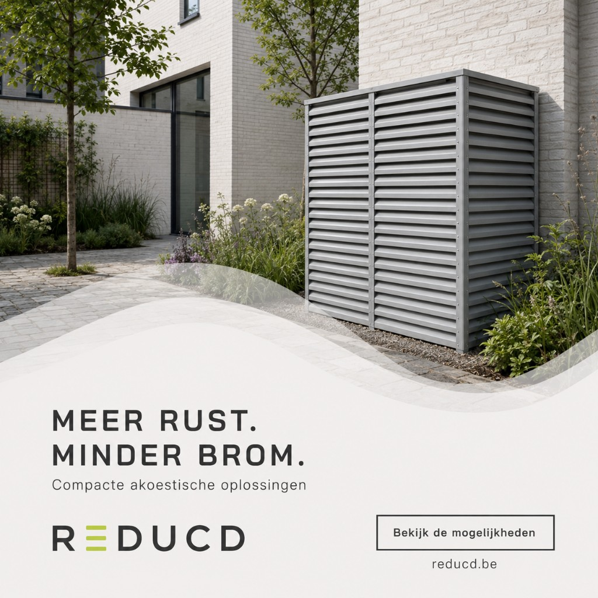
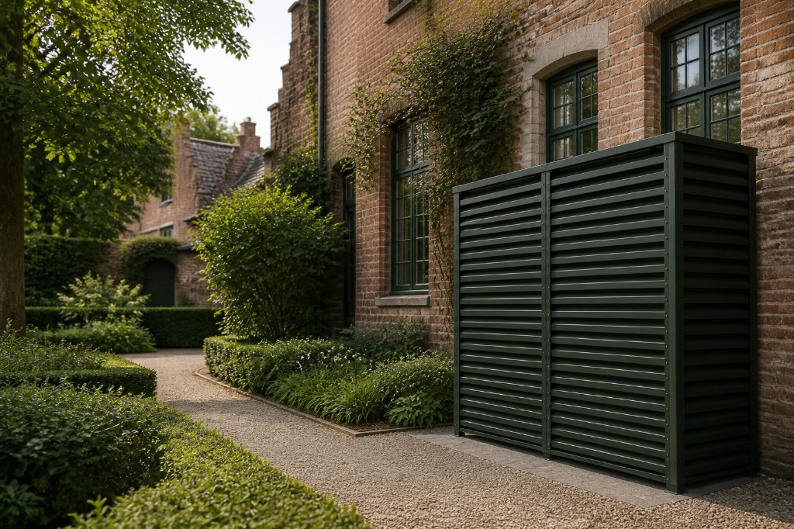
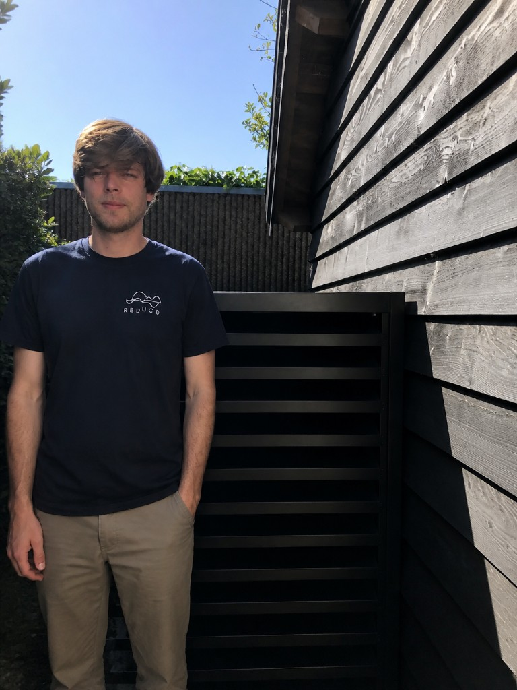
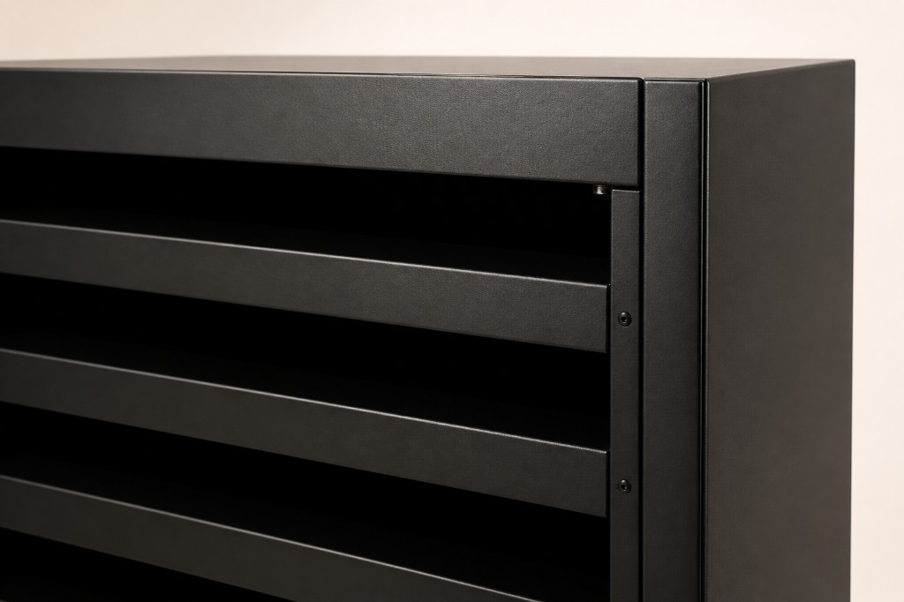
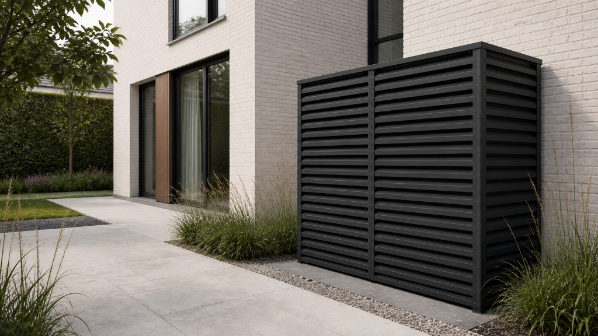
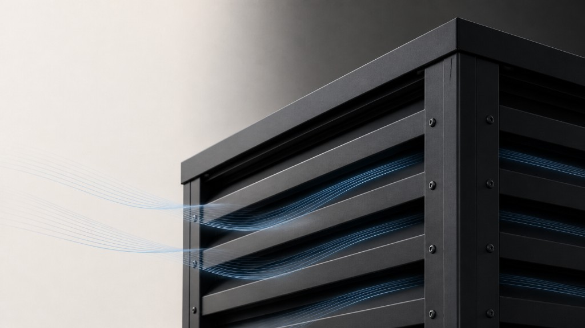

Stilte in de praktijk
Inzichten over geluidsreductie, installatie en duurzaam verwarmen — voor België en Nederland.

Warmtepomp te luid? Zo verminder je geluidsoverlast
Een warmtepomp is zuinig, maar het buitengeluid kan storend zijn. Wat decibels écht betekenen, en hoe je het geluid structureel terugbrengt.

Akoestische omkasting of suskast: wat is het verschil?
Suskast, geluidskast, omkasting: drie woorden, niet altijd hetzelfde product. Waarom een sierkap het geluid zelden oplost.

Warmtepomp naast de buren: wat zeggen de regels in BE en NL?
Nederland heeft duidelijke erfgrenswaarden. België werkt via gewest, gemeente en hinderrecht. Wat je wél kunt plannen — zonder juridisch advies.

Magnelis® en Built to Last: waarom het materiaal telt
Een omkasting staat 365 dagen buiten. Magnelis®, RVS 316 en gerecycled PET zijn geen details — ze bepalen of de kast over tien jaar nog stil én mooi is.

Vrijstaand of wandmodel: welke omkasting past bij jouw unit?
Vrijstaand voor tuin, oprit of dak; wandmodel als de unit dicht bij de muur staat. Geen esthetische keuze alleen — het bepaalt lucht, service en geluid.

Installatie en vrije ruimte rond je warmtepomp
Te weinig ruimte is de meest onderschatte fout: de unit wordt warmer, luider en moeilijker te onderhouden. Wat je wél vrij moet laten.